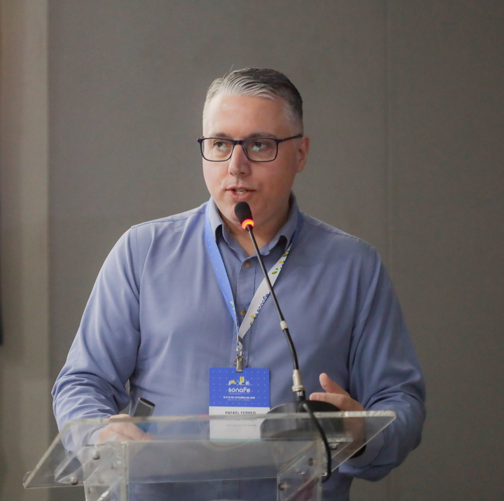

Capacitação presencial de 20h sobre maturação biológica e prescrição de exercícios para profissionais que atuam com crianças e adolescentes. 75% prática. 100% baseado em evidências científicas atualizadas e na experiência prática em diferentes contextos.

Maturação biológica é o processo pelo qual o organismo progride em direção ao estado adulto maduro, abrangendo os sistemas somático, hormonal e esquelético. Ela determina em que estágio de desenvolvimento físico cada criança ou adolescente se encontra — independentemente da idade cronológica.
Dois jovens com a mesma idade podem ter maturidades biológicas completamente diferentes, o que impacta diretamente sua capacidade física, resposta ao treinamento e risco de lesão. Ignorar esse fator é um dos erros mais comuns — e mais perigosos — da prática clínica e esportiva com essa população.
Avalia o desenvolvimento ósseo por meio de radiografias ou estimativas clínicas. Referência mais precisa da idade biológica.
Considera estatura, massa corporal e estágio de desenvolvimento físico geral. Avaliação prática e acessível no campo.
Baseada nos estágios de Tanner, avalia o desenvolvimento das características sexuais secundárias. Essencial para compreender o pico de crescimento.
Determina a interpretação correta de testes físicos, a prescrição segura de exercícios e a individualização real do treinamento para cada jovem atleta ou paciente.
A maioria das formações em saúde e esporte ensina protocolos para adultos. Quando o assunto são crianças e adolescentes, o profissional fica à própria sorte.
O resultado? Profissionais aplicam testes normativos indevidos, prescrevem cargas incompatíveis com o estágio maturacional e tomam decisões de seleção baseadas apenas na idade cronológica. A Matura em Ação foi criada para mudar isso — com método, prática e evidência.
Não é mais um curso teórico. É uma imersão onde o profissional aprende fazendo — e sai com ferramentas prontas para usar no dia seguinte.
A maior parte da carga horária é dedicada à aplicação real. Você pratica os testes, discute casos e resolve problemas junto com o professor durante a imersão.
Cada protocolo apresentado tem respaldo científico atualizado e é imediatamente traduzido para a rotina clínica e esportiva do profissional.
As discussões partem de situações concretas vividas no campo. Sem exemplos genéricos — os casos são da realidade do profissional que atua com jovens.
A metodologia é baseada em resolução de problemas reais. Você aprende a tomar decisões com segurança, mesmo diante de situações atípicas.
Cada participante recebe materiais desenvolvidos especificamente para a imersão — protocolos, fichas de avaliação e guias de prescrição não disponíveis em nenhum outro lugar.
Metodologia exclusiva desenvolvida pelo Prof. Rafael Ferrer, que integra avaliação maturacional, testes físicos e prescrição de exercícios em um sistema único e coeso.
Se você se identificou com pelo menos um desses pontos, a Matura em Ação foi feita para o seu público.
Sistema exclusivo que integra avaliação maturacional, interpretação de testes e prescrição de exercícios em um protocolo único, aplicável e baseado em evidências.
Apresentação e aplicação dos diferentes indicadores de maturidade. Como identificar o estágio correto de cada jovem usando ferramentas acessíveis no campo e na clínica.
Como usar o estágio maturacional para selecionar os testes físicos e funcionais adequados — e como interpretar os resultados sem errar na referência normativa.
Prática dos principais protocolos de avaliação adaptados ao estágio maturacional. Casos reais, discussão em grupo e tomada de decisão baseada em dados.
Como estruturar a prescrição de exercícios para prevenção de lesões e desenvolvimento de performance — respeitando e aproveitando cada fase do crescimento.
100% baseado em evidências científicas atualizadas e na experiência prática em diferentes contextos
Presencial — realizado na cidade do organizador. O Prof. Rafael Ferrer se desloca até você.
Fisioterapeutas, educadores físicos, preparadores físicos e profissionais do esporte que atuam com crianças e adolescentes.
Certificado de participação emitido ao final da imersão para todos os participantes presentes.
Materiais exclusivos desenvolvidos pelo Prof. Rafael Ferrer incluídos para todos os participantes.
"Muito obrigado pela parceria e por ter abrilhantado nosso evento! Vc é diferenciado, fera. Parabéns por seu trabalho e muito obrigado por compartilhar comigo!"
"Quero te agradecer de coração, o pessoal só elogios, adoraram a tua explanação. Pode ter certeza que contribuiu muito para a aprendizagem deles. Muito obrigada."
"Sensacional Dr. Ferrer! Acabei de ouvir! Até anotei algumas coisas."
"Veio uma demanda para avaliar uma criança praticante de futebol e jiu-jitsu que irá iniciar futsal. Lembrei de quem? Da minha referência em Fisioterapia Esportiva para crianças e adolescentes — o Sr., hahah."
"Muito obrigada por tudo. Eu sempre amei a fisioterapia, e hoje consegui me encontrar de verdade. Quando estou estudando, sinto sensações que há muito tempo não sentia. O senhor é incrível."
"Professor, eu amei. Na realidade estou fascinada com o assunto. Hoje quero trabalhar apenas com jovens atletas."
"É sempre um prazer ver você falando e, principalmente, fazendo acontecer! Máximo respeito! É uma temática que tenho gostado e acho muito importante — complexa e desafiadora. Parabéns pela iniciativa!"
"Nesse assunto, como você é referência, tenho humildade em admitir a minha ignorância e correr atrás. E você está ajudando e muuito meu amigo. Só tenho a agradecer."
Depoimentos espontâneos recebidos via WhatsApp por alunos, colegas e organizadores de eventos.
Fisioterapeuta · Educador Físico · Mestre em Educação Física
Rafael Ferrer tem 24 anos de experiência com crianças e adolescentes no esporte — em escolas, escolinhas, clubes, grandes eventos esportivos e na clínica. É criador do Método MINA+ (Método de Individualização do Neurodesenvolvimento Atlético), o único sistema integrado de avaliação maturacional e prescrição de exercícios para jovens desenvolvido no Brasil.
Atualmente atua com consultoria de jovens atletas e treinamento baseado no status maturacional na Clínica Ismael Gomes (Florianópolis/SC), como responsável pela gestão de saúde e performance do PSG Academy Florianópolis, e como docente de graduação e pós-graduação desde 2009.
Você organiza a imersão na sua cidade. Define o ingresso de acordo com o seu mercado. Eu vou até você.
Exemplo de cálculo
O organizador define o ingresso livremente e fica com a diferença.
Custos cobertos pelo organizador
O que o professor entrega aos alunos
🎁 Oferta especial para os alunos
Pacote MINA+ + Curso Avaliação do Jovem Atleta:
Não. A imersão é adaptável a diferentes ambientes. É necessário um espaço amplo para as atividades práticas (como uma sala de aula, academia ou ginásio), equipamentos básicos de avaliação física e projetor/TV para as apresentações. Rafael orienta o organizador sobre o que preparar antes do evento.
A imersão é viável a partir de um grupo pequeno — geralmente entre 15 e 30 participantes é o ponto ideal para garantir qualidade prática e retorno financeiro para o organizador. Converse com Rafael sobre o cenário da sua cidade para fazer a conta juntos.
O valor de R$2.500 é o mínimo para que a parceria aconteça. Cidades com maior distância ou logística mais complexa podem ter valores ajustados. Entre em contato para conversar sobre a sua situação específica.
As 20h podem ser organizadas em um final de semana intensivo (sexta à noite + sábado e/ou domingo) ou ao longo de dois dias consecutivos. O formato é definido com o organizador de acordo com a disponibilidade do público local.
Fisioterapeutas, educadores físicos e preparadores físicos que atuam ou desejam atuar com crianças e adolescentes no esporte, escolinhas, clubes ou clínica. A imersão é pensada para quem já tem formação na área da saúde ou esporte.
Sim. Todos os participantes que concluírem a imersão recebem certificado de participação com carga horária de 20h, emitido ao final do evento.
A imersão que os profissionais da sua região estão esperando — sem precisar viajar para ter acesso ao conteúdo. Você organiza, você lucra, eles evoluem.
📩 ferrerk3@yahoo.com.br · 💬 (55) 98425-3252